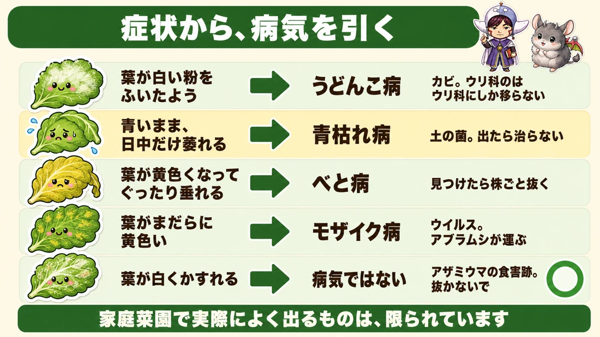
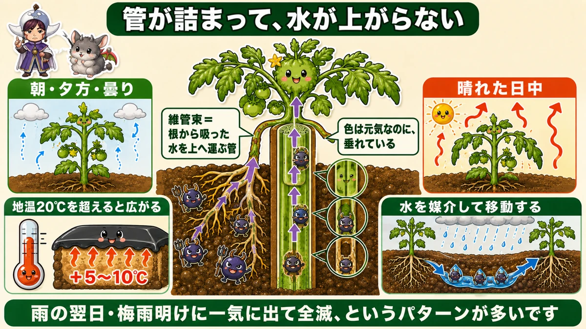
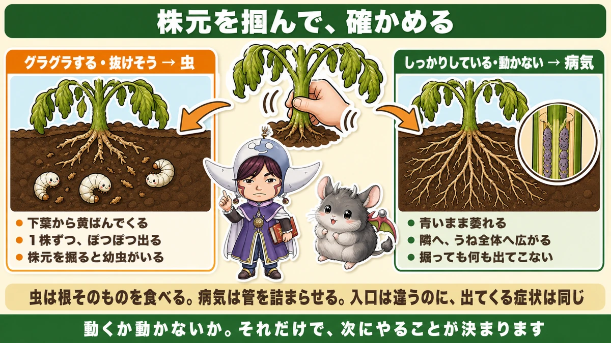
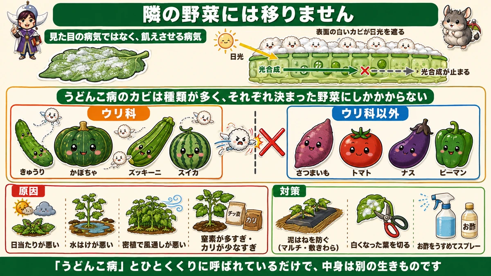

青いまま萎れたら、それは病気です🍅 株元を掴んで確かめます

🗨️「葉が白い粉をふいている」
🗨️「昨日まで元気だったのに、急に萎れた」
🗨️「畑全体に広がるんじゃないかと不安」
どうも、8150（えいこう）です🌱 家庭菜園歴8年、理科の教員免許を持っていて、有機・無農薬で野菜を育てています。
前に、春の虫の話をしました。★症状から犯人を逆に引く、という方法です。
今日はその病気版です。そしてひとつ、★前回の話に大事な補足があります。
先に、この記事でいちばん言いたいことを言っておきます。
★青いまま萎れたら、それは病気です。
前回、「日中しおれて夜に元気なら根がやられている」とお伝えしました。あれは虫の話でした。★同じ症状を出す病気が、もうひとつあります☺️

📖 この記事の目次
症状から、病気を引く
覚えるのは5つで足ります
畑で出る病気はたくさんありますが、家庭菜園で実際によく出るものは限られています。
★葉が白い粉をふいたよう → うどんこ病
★青いまま、日中だけ萎れる → 青枯れ病
★葉が黄色くなって、ぐったり垂れる → べと病
★葉がまだらに黄色い → モザイク病
★葉が白くかすれる → ★これは病気ではありません
最後のひとつは、前に玉ねぎのところでお話ししました。★アザミウマという虫の食害跡です。病気と間違えて株を抜いてしまう方が多いので、覚えておいてください。
今日は上の2つを、くわしくお話しします。
★★青枯れ病 ── 緑のまま、しおれます
見た目が、独特です
まずこちらから。名前のとおり、★青いまま枯れる病気です。
畑を見ていると、1株だけこうなっています。
- ★葉は青々として、緑色をしている
- ★なのに、しゅんと垂れている
★「枯れているように見えるのに、色は元気」。この違和感が特徴です。
黄色くなってから枯れるなら分かります。でも緑のまま萎れている。初めて見たときは、何が起きたのか分かりませんでした。
★時間帯で、見え方が変わる
もうひとつの特徴があります。
- ★朝と夕方 … 比較的しゃんとしている
- ★曇りの日 … わりと元気に見える
- ★晴れた日中 … しゅんと萎れる
これ、前回の虫の話とまったく同じです。
なぜそうなるのか
理由も、虫のときと同じ理屈です。

★原因は、土の中にいる菌です。
葉に何かが付いたのではありません。★根から菌が入って、茎の中を上っていきます。
そこで何をするか。★維管束を萎縮させます。
維管束というのは、★根から吸い上げた水を、上へ運ぶ管のことです。人でいえば血管ですね。
★ここが詰まると、水が上がらなくなります。
だから、日中に葉から水がどんどん蒸発する時間だけ、追いつかなくなる。夜は蒸発が止まるので、少ない量でも足ります。
★虫は根そのものを食べる。病気は管を詰まらせる。★入口は違うのに、出てくる症状は同じです。
★★じゃあ、どう見分けるのか
株元を、掴んでください
ここが今日いちばん実用的なところです。
★しおれている株の株元を持って、軽く揺らしてみてください。

★グラグラする、抜けそう → 虫です
根を食べられているので、支えを失っています。★株元の土を浅く掘れば、白い幼虫が見つかります。
★しっかりしている、動かない → 病気です
根は無事なので、株はちゃんと立っています。★掘っても何も出てきません。
ほかの見分け方
もうふたつ、目安があります。
★葉の色
虫にやられた株は、下の葉から黄ばんできます。★青枯れ病は、青いまま萎れます。
★広がり方
虫は1株ずつ、ぽつぽつと出ます。★青枯れ病は、隣へ、そのまた隣へと広がっていきます。
なぜ隣に広がるのか
菌は土の中にいます。そして★野菜の根は、思っているよりずっと遠くまで伸びています。
前に追肥の話をしたとき、「根の先端はもう株元にない」とお伝えしました。★うねの肩まで伸びています。
その根が、菌のいるところまで届く。★そこから感染します。
だから★1株出たら、そのうねは覚悟しておいたほうがいい。私が読んだ農家さんも、「ここからビクビクしながら栽培することになる」と書いていました。
★青枯れ病が広がる条件
★地温20℃を超えると、動き出す
はっきりした数字があります。
★地面の温度が20℃を超えると、広がりやすくなります。
これからの季節は、気温がどんどん上がります。★とくに黒マルチをしている方は注意してください。
前にじゃがいものところでお話ししたとおり、★黒マルチの下は気温より5〜10℃高くなります。天気予報が20℃でも、マルチの下はもう25〜30℃です。
★保温のためにかけたマルチが、菌にとっても好条件になります。
★★水で移動します
もうひとつ、大事な性質があります。
★この菌は、水を媒介して移動します。
雨が降ると、土の中を水が流れます。菌もそれに乗って動きます。
すると、どうなるか。
★雨の翌日に広がる。★梅雨明けに一気に出て、全滅する。
このパターンがいちばん多いそうです。★去年それで全滅した、という話も読みました。
★雨と気温、両方がそろうのが梅雨明けです。ここが山場だと思っておいてください。
出てしまったら
★正直に言うと、治りません
つらい話ですが、はっきり書きます。
★青枯れ病は、出てからでは直す方法がありません。
農薬でも治りません。抜くしかない。
★疑わしい株は、抜く
やることは1つです。
★少しでも疑いがあるなら、抜いてください。
抜くのをためらう気持ちは分かります。でも、
- ★残しても、もう収穫できません
- ★半月から1か月で、どのみち枯れます
- ★その間ずっと、菌の温床になります
★置いておく理由が、ひとつもありません。
できれば株のまわりをスコップで掘って、根ごと取り除いてください。★隣の株の根も来ているので、無理なら引き抜くだけでも構いません。
★★ハサミが、病気を運びます
そしてもうひとつ、絶対に忘れてはいけないことがあります。
★感染した株をハサミで切ると、その汁がハサミに付きます。
そのまま隣の株を切ったら、どうなるか。★自分の手で、菌を運ぶことになります。
前にじゃがいものモザイク病のところで、まったく同じ話をしました。★ウイルスも、細菌も、人間が運びます。
★ハサミは株ごとにアルコールで拭く。この習慣だけは、面倒でも続けてください。
★うどんこ病 ── 白い粉
見た目そのままの名前です
こちらは分かりやすい病気です。
★葉の表面が、うどんの粉をまぶしたように白くなります。

正体は★カビの一種です。土の中に潜んでいて、★風に乗って飛んできます。
★出る時期は5月から11月と長いです。
★雨のあと、晴れると広がる
いちばん広がるタイミングが決まっています。
★雨が続いたあと、カラッと晴れたとき。
湿気でカビが増えて、晴れて風が吹くと、その胞子が一気に飛ぶ。★梅雨明けが要注意なのは、青枯れ病と同じです。
何が困るのか
白くなるだけなら、見た目の問題です。でも、そうではありません。
★葉の表面が白いカビでふさがれると、光合成ができなくなります。
光が届かない。エネルギーが作れない。★株はどんどん弱って、最後には枯れます。
★見た目の病気ではなく、飢えさせる病気です。
★★でも、隣の野菜には移りません
ここは安心してください
うどんこ病が出ると、「畑全体に広がるのでは」と不安になります。
★大丈夫です。
実は、★うどんこ病のカビには、たくさんの種類があります。
そして★それぞれ、決まった野菜にしかかかりません。
ウリ科のものは、ウリ科だけ
具体的に言うと、こうです。
★かぼちゃについたうどんこ病のカビは、ウリ科（きゅうり・メロン・ズッキーニ・スイカ）にしかかかりません。
- 隣のさつまいもには移りません
- トマト、ナス、ピーマンにも移りません
★「うどんこ病」とひとくくりに呼ばれているだけで、中身は別の生きものです。
これを知っているかどうかで、心の余裕がまったく違います。★私はこれを知って、ずいぶん気が楽になりました。
うどんこ病の原因は4つ
ほとんどが「風通し」と「肥料」
出る原因は、はっきりしています。
★1. 日当たりが悪い
★2. 水はけが悪い
★3. 密植して、風通しが悪い
★4. ★窒素が多すぎる、またはカリが少なすぎる
1〜3は、カビ全般と同じですね。じめじめして暗いところが好きです。
★窒素が多いと、体が弱くなる
4つ目だけ、少し説明します。
★窒素をやりすぎると、植物は軟弱になります。
前に玉ねぎの止め肥のところでお話ししました。★窒素で急いで作られた細胞は、壁がうすい。だから菌が入りやすくなります。
そして逆に、★カリが少なすぎてもかかりやすくなります。
カリは根を丈夫にし、寒さや病気への抵抗力を上げる肥料でした。★足りないと、守りが薄くなります。
★肥料のバランスが、そのまま病気のかかりやすさになります。
うどんこ病の対策
①泥はねを防ぐ（出る前に）
カビは土の中にいます。★雨で泥がはねて、葉に付くのが入口です。
- ★黒マルチを張る
- ★敷きわらを敷く
- ★防草シートを敷く
何かしら地面を覆っておけば、泥はねが減ります。★誘引のところでお話しした「下葉を切る」も、同じ目的です。
②白くなった葉を、切る
出てしまったあとです。
★最初の少しなら、自然に治ることもあります。
でも、★広がってからでは難しい。白い部分が目立ってきたら、★その葉をハサミで切り取ってください。
残しておくと、そこから胞子が飛び続けます。★弱った葉は、もう働いていません。切って損はありません。
③お酢をうすめてスプレー
農薬を使わない方法として、★お酢をうすめてかける手があります。
前にアブラムシのところで油石けんの話をしました。★あれと同じで、これも農薬ではありません。
濃いと葉を傷めるので、ごく薄くしてください。
全部に共通する、4つの予防
結局、同じ話になります
ここまで2つの病気を見てきましたが、予防は共通しています。
★1. 風通しをよくする
密植しない。下葉を切る。誘引する。★6月号でお話しした「風通しをよくして日を当てる」が、そのまま病気の予防です。
★2. 泥はねを防ぐ
マルチ、敷きわら、下葉を切る。
★3. 窒素を効かせすぎない
軟弱な株は、病気に弱い。★足りているところに足さない。
★4. ★ハサミを株ごとに除菌する
★人間が、いちばん確実な運び屋です。ここだけは道具でしか防げません。
治すより、起こさない
無農薬でやっていると、はっきり分かることがあります。
★病気は、治すより起こさないほうがずっと簡単です。
薬で叩けないぶん、出てからできることは限られます。だからこそ、★出る前の4つに手をかける価値があります。
この記事の要点
まとめ
- ★青いまま萎れたら、それは病気（青枯れ病）
- ★葉は緑なのに、しゅんと垂れる。★晴れた日中だけ萎れる
- ★原因は土の中の菌。★根から入って維管束を萎縮させ、水が上がらなくなる
- ★★見分けは株元を掴むこと。★グラグラ＝虫／★しっかり＝病気
- 虫は下葉から黄ばむ。★青枯れ病は青いまま萎れる
- 虫は1株ずつ、★青枯れ病は隣へ広がる
- ★★地温20℃を超えると広がる。★黒マルチの下は気温＋5〜10℃なので注意
- ★★水を媒介して移動する。★雨の翌日・梅雨明けに一気に出る
- ★出てからでは治らない。★疑わしい株は抜く（残しても半月〜1か月で枯れ、温床になる）
- ★★感染株を切ったハサミが、隣の株へ菌を運ぶ
- ★うどんこ病はカビ。葉が白い粉をふいたようになる
- ★雨のあとカラッと晴れると一気に広がる
- ★白いカビで光合成ができなくなり、株が飢えて枯れる
- ★★★うどんこ病のカビは種類が多く、★ウリ科のものはウリ科にしかかからない
- ★かぼちゃのカビは、隣のさつまいもやトマトには移らない
- 原因は★日当たり／水はけ／密植／★窒素過多とカリ不足
- ★窒素が多いと細胞の壁がうすくなって、菌が入りやすい
- 対策は★泥はねを防ぐ／★白い葉を切る／★お酢をうすめてスプレー
- 共通の予防4つ＝★風通し／★泥はね／★窒素を効かせすぎない／★ハサミの除菌
- ★病気は、治すより起こさないほうがずっと簡単
全部やろうとしなくて大丈夫です。まずは畑に出て、いちばん元気のない株の株元を掴んで、揺らしてみてください。★動くか動かないか。それだけで、次にやることが決まります🍅
次回は、夏の水やりの話。朝と夕方でどう違うのか、どれだけやればいいのかをお話しします💧
ここまで読んでくださって、ありがとうございました。
剪定ばさみ
株ごとに拭くのが前提です。感染した株を切った汁が、そのまま次の株へ移ります。


敷きわら
病気の多くは、雨の泥はねで葉に上がります。地面を覆うのがいちばん確実です。
![[商品価格に関しましては、リンクが作成された時点と現時点で情報が変更されている場合がございます。]](https://hbb.afl.rakuten.co.jp/hgb/56bc2fb2.ff40a6e6.56bc2fb3.618f6a70/?me_id=1257026&item_id=10000211&pc=https%3A%2F%2Fthumbnail.image.rakuten.co.jp%2F%400_mall%2Fsharuka%2Fcabinet%2F09042254%2Fimgrc0081094692.jpg%3F_ex%3D240x240&s=240x240&t=picttext "[商品価格に関しましては、リンクが作成された時点と現時点で情報が変更されている場合がございます。]")
黒マルチ
同じ理由で泥はねを止めます。ただし地温が上がるので、青枯れ病が出た畑では慎重に。

不織布
雨よけの代わりに。風通しを保ったまま、雨が直接打ちつけるのを弱められます。
![[商品価格に関しましては、リンクが作成された時点と現時点で情報が変更されている場合がございます。]](https://hbb.afl.rakuten.co.jp/hgb/56bc237a.e97551b1.56bc237b.2513ed10/?me_id=1310260&item_id=10000879&pc=https%3A%2F%2Fthumbnail.image.rakuten.co.jp%2F%400_mall%2Fdiokasei%2Fcabinet%2F007fusyokufu%2F12g%2Fimgrc0092049705.jpg%3F_ex%3D240x240&s=240x240&t=picttext "[商品価格に関しましては、リンクが作成された時点と現時点で情報が変更されている場合がございます。]")
あわせて読みたい